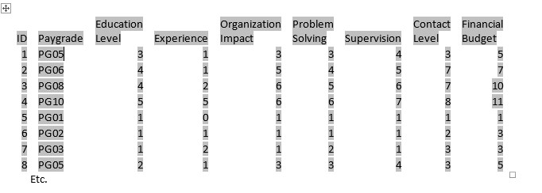

HRAnalyticsBlogs
About
HRAnalyticsBlogs
Categories
All
(24)
HR Analytics
(24)
Other Formats
PDF
MS Word
ePub
People/HR Analytics - What Is your Paradigm ? It Matters
HR Analytics
TL;DR; People/HR Analytics long term sustainability into the future does not rest on continuing to promote and treat…
May 30, 2023
Lyndon Sundmark, MBA
Are You An ‘HR’ Innovator or Caretaker or Undertaker?
HR Analytics
TL;DR; The HR Innovator Role is hard to find in organizations
Aug 15, 2021
Lyndon Sundmark, MBA
Data-Driven’ Job Analysis And Job Descriptions
HR Analytics
“Job Analysis and Job Descriptions in their current form, for the most part, are
NOT
data-driven.”
Mar 3, 2021
Lyndon Sundmark
HR Analytics Is A ‘Way of Doing HR’- Not An ‘Add-On’
HR Analytics
HR Analytics Is a different…
Sep 1, 2020
Lyndon Sundmark, MBA
The Challenge for HR Analytics -2020 And Beyond
HR Analytics
It’s been about six years since I started writing blog articles related to HR Analytics. This is because of the increasing visibility of activity in this field.
Jan 15, 2020
Lyndon Sundmark, MBA
Automated Machine Learning –Does This Benefit HR Analytics?
HR Analytics
One of the things you can assume about HR Analytics (“Data Science being applied to HR management and decision making” or “Data-Driven HR”) is that this…
Jun 12, 2019
Lyndon Sundmark, MBA
Is It Time To Revisit The Scope and Breadth of People / HR Analytics?
HR Analytics
As I continue to peruse much of what is being written on the internet on ‘all things People/HR Analytics’, a huge amount of it is geared towards talking about traditional HR…
Oct 13, 2018
Lyndon Sundmark, MBA
A Good Article On the R ‘Rattle’ GUI
HR Analytics
Hi Everyone,
Jul 4, 2018
Lyndon Sundmark, MBA
Using Microsoft R Server and Other Microsoft Technologies to Embed HR Analytics Into HR Practices- An Example
HR Analytics
HR Analytics is still in its infancy in most organizations. One way to gauge…
May 2, 2018
Lyndon Sundmark, MBA
Doing HR Analytics - A Practitioner’s Handbook With R Examples -paperback now available
HR Analytics
Sep 20, 2017
Lyndon Sundmark, MBA
Announcing “Doing HR Analytics – A Practitioner’s Handbook With R Examples
HR Analytics
For those of you who have been following my HR analytics blog articles to date…
Sep 6, 2017
Lyndon Sundmark, MBA
Why Kaggle Might Be Important To People Analytics
HR Analytics
Fo…
May 8, 2017
Lyndon Sundmark, MBA
Using Microsoft Power BI and R in People Analytics – A Quick Example
HR Analytics
One of things I try to do in the field of People Analytics is monitor and try out new tools and technologies that come out that appear to add value to People Analytics.
Jan 17, 2017
Lyndon Sundmark, MBA
How Do I Start Preparing Myself for the Field of People/HR Analytics?
HR Analytics
A little over a year ago, Hendrik Feddersen (https://www.linkedin.com/in/hendrikfeddersen)
Oct 13, 2016
Lyndon Sundmark, MBA
People Analytics in R - Job Classification ‘Revisited’
HR Analytics
About a year back I posted a couple of blog articles on Data Driven Job Classification, showing a variety of tools…
Apr 30, 2016
Lyndon Sundmark, MBA
People Analytics Using R - Employee Churn- An Example
HR Analytics
This is the second is a series of blog articles on using R for doing People Analytics. The first was my last article:
Mar 27, 2016
Lyndon Sundmark, MBA
People Analytics - An Example Using R
HR Analytics
Over last 18 months or so I have been…
Feb 28, 2016
Lyndon Sundmark, MBA
HR Analytics – What Stopping Us And Where Do Go From Here?
HR Analytics
Oct 23, 2015
Lyndon Sundmark
Data-Driven’ HR Operations
HR Analytics
Over the last few articles that I have written, I have talked about the criticality of being ‘data driven’ in HR to achieve…
Apr 9, 2015
Lyndon Sundmark
Data-Driven’ Job Classification Part 2
HR Analytics
In my last blog article, I showed an example of how ‘data driven’ analytical…
Mar 25, 2015
Lyndon Sundmark

Data Driven Job Classification
HR Analytics
As I have…
Mar 4, 2015
Lyndon Sundmark, MBA
WHY HR MIGHT NOT BE ABLE TO REINVENT ITSELF
HR Analytics
From
Jan 20, 2015
Lyndon Sundmark
Workforce/HR/People Analytics- Is This a Wake-Up Call for HR?
HR Analytics
Over the last 35 years or so, I have had the privilege of working jointly in the HR and IT fields and in the interaction of those fields over that…
Dec 17, 2014
Lyndon Sundmark, MBA
Is it Time To Take Another Look at How to Calculate Employee Turnover?
HR Analytics
Employee turnover is a very common HR metric of interest to many organizations.
Nov 25, 2014
Lyndon Sundmark, MBA
No matching items